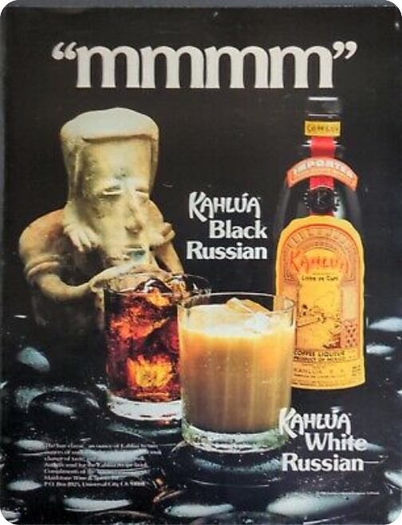

White Russian

Creamy and thick, might get you sick. Beware to the lactose intolerant. Dasvedanya to you in a few hours...
Ingredients
- 60ml vodka
- 30ml coffee-flavored liqueur (Kahlua, Bailey's)
- some ice
- 30ml heavy cream
Steps
- Combine the vodka, coffee liqueur, and ice in a whiskey glass
- Top with cream.
Return to main page